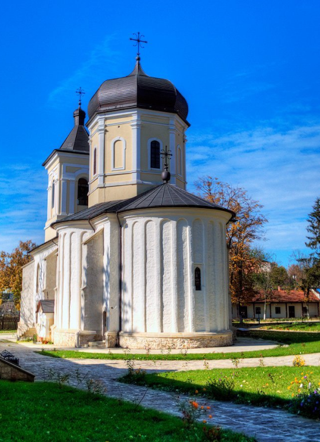

Mănăstirea Căpriana

Sitting in a lush green forest in Capriana is one of the oldest monasteries in Moldova. Founded in the 15th century by Alexander the Good, it was once the home of the Moldavian bishop as well as Chiprian, one of the first Moldavian poets. It houses the largest convent library in the country and after years of neglect, was reopened in 1989 as a symbol of national revival. While you’re there, you can make some stops nearby to visit the oak tree of Stefan the Great and Codru, the oldest nature reserve in the country.